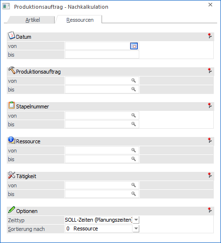
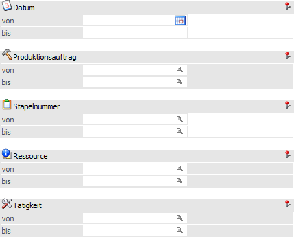
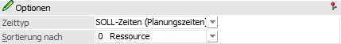

Mit Hilfe des Registers "Ressourcen" kann eine Liste ausgegeben werden, auf welcher die Differenzen zwischen den SOLL- und den IST-Werten der Ressourcen ersichtlich sind (Zeiten und Kosten). Des Weiteren wir auf nicht abgeschlossene Tätigkeiten hingewiesen.
Hinweis
Teilverplante Zeiten werden mit einem in der Auswertung gekennzeichnet. Die Summe der Kosten für die teilverplante Zeiten werden zu dem in der Tätigkeit hinterlegten Teilverplanungs-Prozentsatz mitgerechnet.
Des Weiteren stammen die Werte der Ressourcen aus dem Ressourcenstamm. Werden die damaligen Werte in der Auswertung benötigt, so können diese per Formularanpassung eingebunden werden (Variable T160.C031).

Die Ausgabe kann durch folgende Kriterien eingeschränkt bzw. beeinflusst werden:
Selektion

Ø Datum von / bis
An dieser Stelle kann eine Einschränkung auf Grundlage des SOLL-Datums (Planungsdatum) bzw. des IST-Datums (Ausführungsdatum) erfolgen. D.h. es werden nur jene Zeilen, welche in diesem Zeitraum geplant oder ausgeführt wurden.
Ø Produktionsauftrag von / bis
Hier kann eine Selektion auf die auszuwertenden Produktionsaufträge vorgenommen werden.
Ø Stapelnummer von / bis
In diesen Feldern kann auf die auszuwertende Stapelnummern eingeschränkt werden.
Ø Ressource von / bis
Einschränkung der Artikel, die ausgewertet werden sollen.
Ø Tätigkeit von / bis
Einschränkung der Tätigkeiten, die ausgewertet werden sollen.
Optionen

Ø Zeittyp
Mit Hilfe einer Mehrfachauswahl kann definiert werden, welche Zeiten auf der Auswertung ausgegeben werden sollen. Hierbei stehen folgende Möglichkeiten zur Verfügung:
ü offene SOLL-Zeiten
Wurde die
Tätigkeit eines Arbeitsschritts nicht komplett abgeschlossen oder noch gar nicht
begonnen, so wird der offene Anteil der SOLL-Zeit als REST ausgewiesen.
ü SOLL-Zeiten (Planungszeiten)
Es
werden die SOLL-Zeiten ausgegeben. Diese stammen aus der Anlage des
Produktionsauftrags, d.h. wieviel Zeit wird standardmäßig benötigt um eine
Tätigkeit abzuschließen / durchzuführen.
Achtung
Die SOLL-Zeit wird erst angezeigt, sobald mit der zu Grunde liegenden Tätigkeit begonnen wurde (d.h. es liegt eine abgeschlossene IST-Zeit vor; dieses ist über die IST-Zeitenerfassung - im Register "Produktionsauftrag" die Option "abgeschlossen" aktivieren - oder die Produktionsendmeldung durchführbar). Hierbei wird die SOLL-Zeit pro Ressource immer im kompletten Umfang angezeigt, d.h. die Zeit wird nicht anteilig aufgrund der IST-Zeit berechnet oder dergleichen.
Hinweis
Eine Korrektur der SOLL-Zeiten und der benötigten Ressourcen über das Tätigkeiten einplanen möglich.
ü erfasste IST-Zeiten (noch nicht
endgemeldet)
Es werden jene Zeiten ausgewiesen, welche in der
IST-Zeitenerfassung erfasst und noch nicht per Produktionsendmeldung endgemeldet
wurden. Diese Zeiten werden auf der Auswertung mit "IST" gekennzeichnet.
ü endgemeldete IST-Zeiten
Es
werden jene Zeiten ausgewiesen, welche per Produktionsendmeldung endgemeldet
wurden. Diese Zeiten werden auf der Auswertung mit "IST" gekennzeichnet.
Ø Sortierung nach
An dieser Stelle kann die Sortierung der Liste definiert werden. Folgende Möglichkeiten stehen zur Verfügung:
ü 0 - Ressource
ü 1 - Datum
ü 2 - Auftrag
ü 3 - Tätigkeit
ü 4 - Stapelnummer